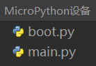

Hello World
我們可以從輸出一段“Hello World”文字開始，以此作為了解和學習MicroPython的第一步。
本文所述操作基於Thonny IDE，需要先完成對Thonny IDE的配置，與開發板建立連接。 Thonny IDE運行環境搭建可以參考這裡。
使用REPL
REPL即Read-Eval-Print-Loop的縮寫名詞，譯為 讀取-求值-輸出-循環。
我們可以通過實際操作來明白它的意思。
將已經安裝了MicroPython固件的開發板連接電腦，運行Thonny IDE並正確配置後，在Shell窗口中將出現這樣的文本內容：
MicroPython v1.17 on 2022-01-09; ESP32S3 module with ESP32S3
Type "help()" for more information.
>>>
注意最後一行的>>>提示符，我們可以直接在這後面輸入算式或是代碼，按下鍵盤enter回車鍵就會立即在下一行得到輸出結果。
>>> 1+2
3
>>> print("Hello World")
Hello World
>>>
現在可以很直觀的理解了，它會讀取我們輸入的信息，執行運算求值，輸出結果，然後等待我們後續的輸入，一直循環這個過程，這也是REPL又被譯為交互式解釋器的原因，我們可以直接通過輸入代碼來和硬件交互，沒有像傳統的C語言那樣需要在中間執行編譯的過程，我們輸入的信息沒有經過編譯就傳輸給芯片自行解釋並運行了，這本是Python語言的一大重要特性，MicroPython完美繼承了它。
如果僅僅是使用MicroPython REPL，很多具有串口信息收發功能的軟件都可以操作，感興趣的話可以試試各種串口工具，這可以令人更深刻的理解 “沒有中間執行編譯的過程” 的意思。
關於REPL的應用，更詳盡全面的內容可以參考MicroPython文檔：REPL
代碼編輯器
Thonny IDE當然不僅僅可以進行REPL的操作，作為python代碼編輯器，本職功能還是有的。
新建一個文件並在其編輯區內輸入代碼。
print(1+2)
print("Hello World")
完成代碼編輯後，點擊保存，可以選擇將文件保存到MicroPython設備中，這將直接將整個文件的數據傳輸到flash中。可將文件命名為main.py，設備會在每次上電或複位後執行有這個文件名的程序，而其他名稱的文件僅在被main.py調用時或是我們在Thonny中點擊運行時被執行。

現在點擊運行，同樣是無需編譯的，在Shell中會立即得到結果。
3
Hello World
另外也可以嘗試REPL的鍵盤控制快捷鍵ctrl+D軟件復位，可以看到復位後程序立即執行並打印出信息。